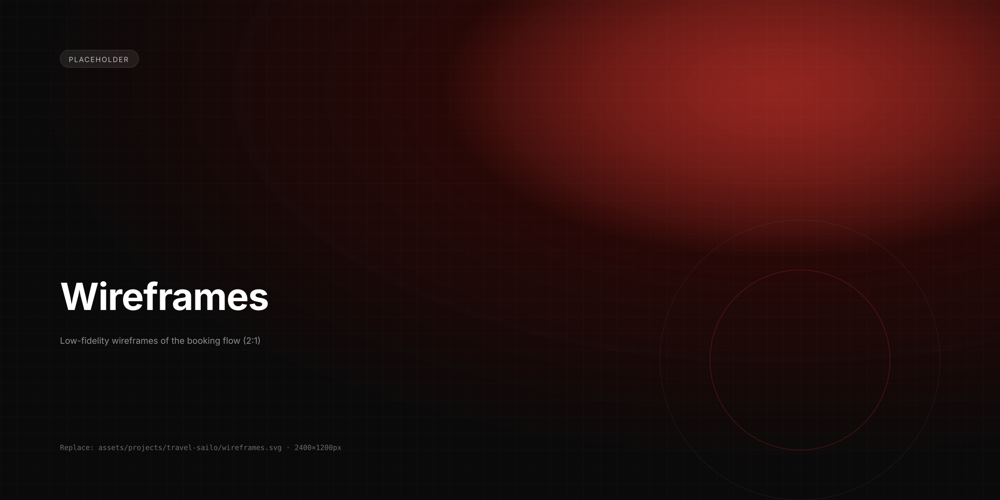
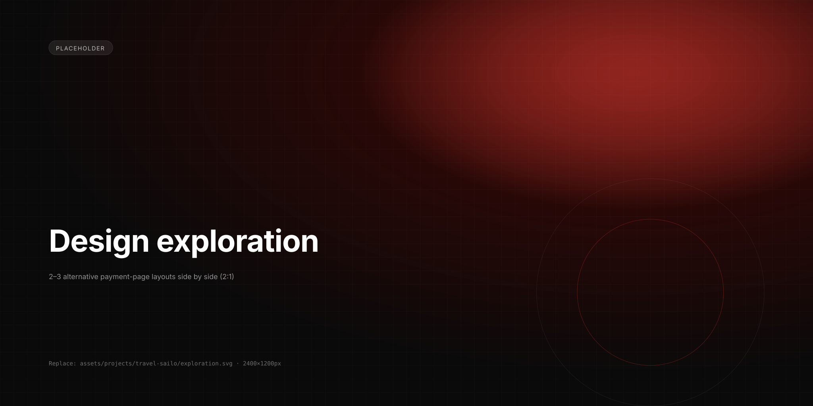
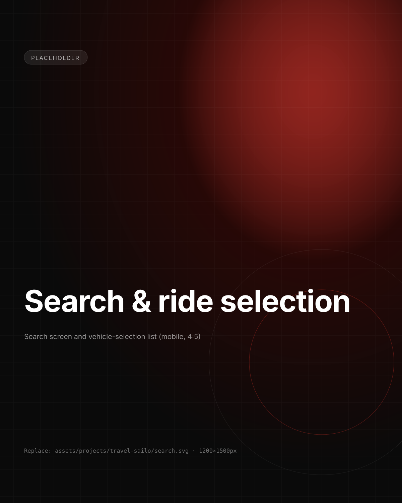
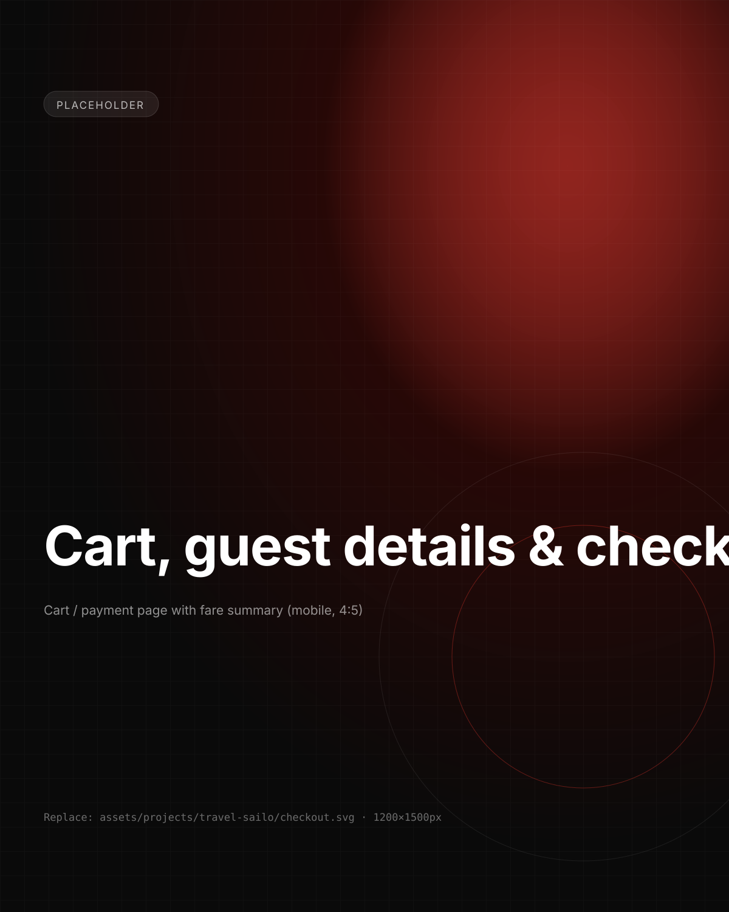
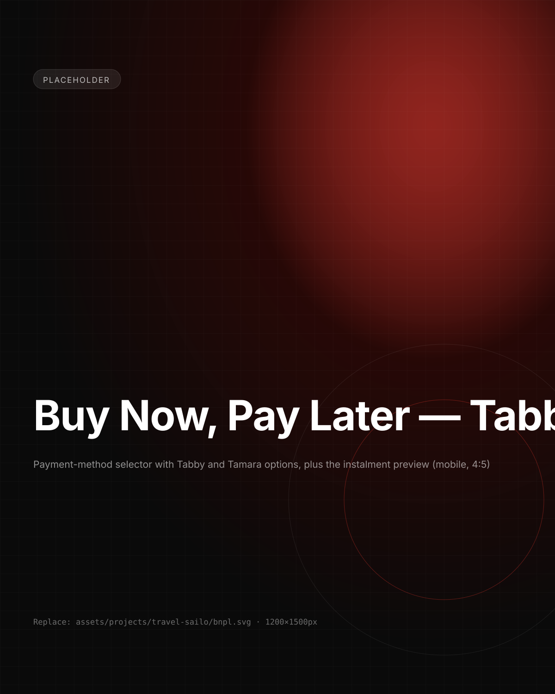
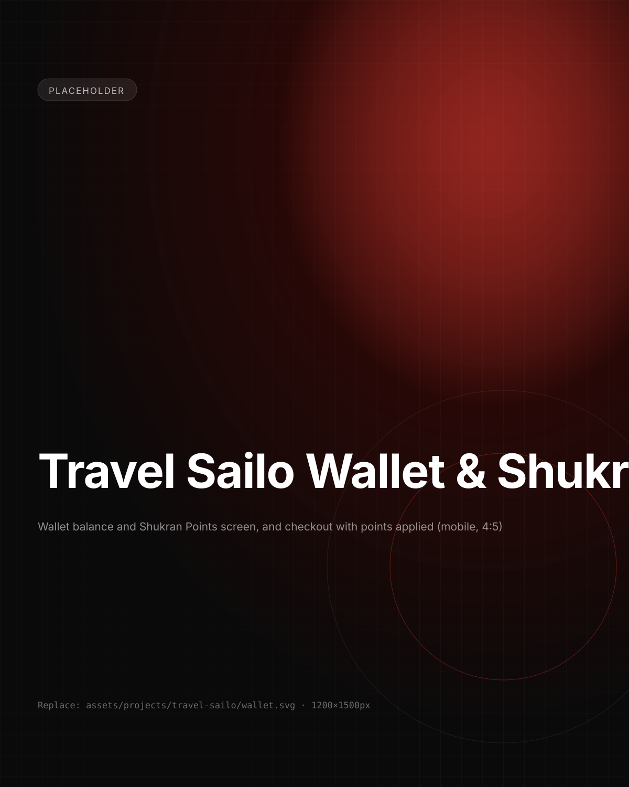
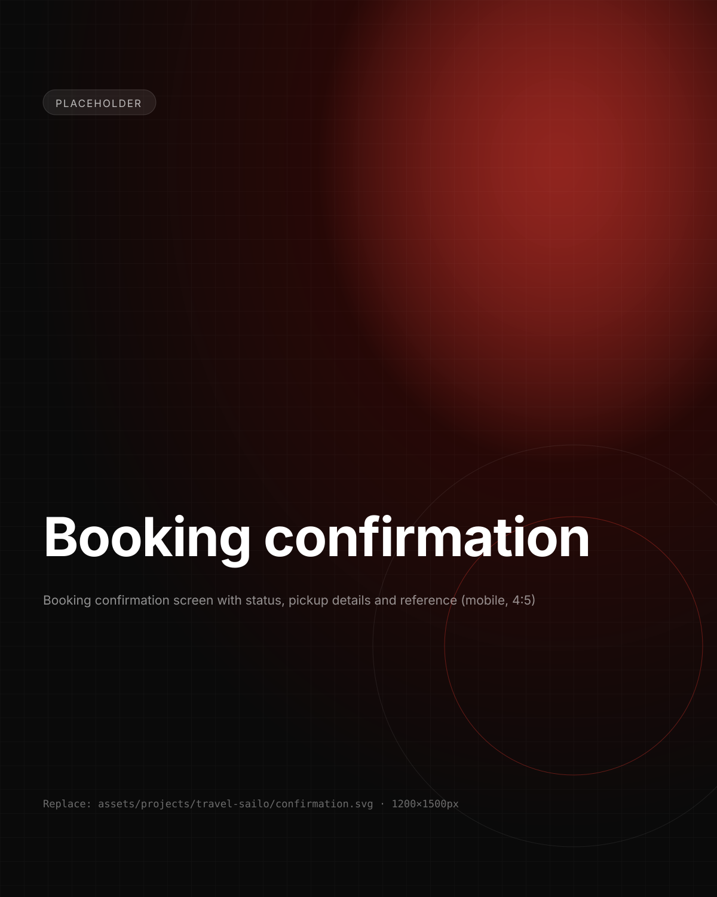

Project overview
One platform, two audiences, many services. Passengers and business customers book rides, airport transfers and hotel-concierge trips on web and mobile — and everything has to feel premium.
01Search & destination discovery
Where to, and when.
02Ride & vehicle selection
Comparing classes and prices.
03Cart & booking details
Reviewing the trip.
04Guest & passenger information
Booking for yourself or someone else.
05Checkout & payment
Card payments at conversion.
06BNPL — Tabby & Tamara
Flexible payment choice.
07Wallet & Shukran Points
Balance, rewards and redemption.
08Booking confirmation
Status, pickup and reference.
09Promotions & engagement
First-ride, loyalty and warranty offers.
10Hotel concierge & airport transfers
Specialised booking flows.
11Driver onboarding & RTA verification
The supply side.
Business context
Travel Sailo serves passengers and business customers in Dubai, where people are used to well-established ride-hailing apps. Competing on a premium promise means the product experience — not just the vehicle — has to signal quality.
Revenue depends on converting searches into confirmed bookings and turning first rides into repeat customers. Supply depends on getting qualified drivers through onboarding and RTA verification quickly.
The challenge
- Breadth: rides, airport transfers and hotel concierge needed one consistent booking model.
- Two audiences: passengers booking for themselves and business customers booking for others.
- Payments: card and BNPL options needed to sit together without adding confusion at the most sensitive step.
- Retention: wallet, points and promotions had to be understandable enough to change behaviour.
- Supply: drivers were getting stuck in onboarding and document verification.
Problem statement
make booking a premium ride feel as effortless and trustworthy as the ride itself — from first search to confirmed pickup — while giving the business new ways to convert and retain customers?
This is a framing statement written from your scope. Replace it with the problem statement you used with the team, if different.
My role & responsibilities
- Led end-to-end UX/UI for passenger and business apps across web and mobile.
- Owned the customer journey: search, ride selection, cart, guest details, payment page, booking confirmation and post-booking engagement — including hotel concierge and airport transfer flows.
- Planned and ran usability tests; interviewed drivers one-on-one.
- Integrated card and BNPL (Tabby & Tamara) payments; designed Wallet & Shukran Points loyalty features.
- Created promotional campaigns and marketing creatives (posters, AI-generated and edited videos, in-app banners).
- Coordinated supply-side operations: driver onboarding, vehicle approvals and RTA document verification.
Add team context: who you worked with (PMs, engineers, number of designers) and who you reported to.
Research & discovery
Research ran on both sides of the marketplace:
01Driver interviews
One-to-one interviews on onboarding, vehicle approval and RTA document verification — where drivers got stuck and what they needed upfront.
02Usability testing
Moderated tests on core booking tasks, observing hesitation, errors and drop-outs; issues ranked by severity and impact.
03Behavioural analytics
Amplitude funnels and feature usage to find where bookings dropped off.
04A/B experimentation
Design iterations validated through A/B tests in Amplitude.
Add numbers: how many usability sessions and driver interviews, and over what period. Add a photo or board from FigJam if you can share it.

User pain points
01Drivers: unclear steps
Some onboarding, vehicle approval and RTA verification steps felt unclear.
02Drivers: missing information
Drivers needed to know requirements upfront instead of discovering them mid-process.
03Passengers: hesitation
Usability tests showed moments of hesitation and error on core booking tasks.
04Passengers: drop-off
Booking drop-offs that analytics and tests helped locate.
Pain points above are taken from your CV at a high level. Replace each with a concrete observation (e.g. ‘4 of 6 participants missed the guest-details toggle’).
Design goals
01Clarity of price
No surprises between selection and payment.
02Choice at payment
Card and BNPL, presented transparently.
03Reward repeat use
Make wallet and points visible and valuable.
04Confidence after booking
Instant certainty about status and pickup.
05One booking model
Rides, airport and hotel bookings share patterns.
06Faster supply
Simpler driver onboarding and verification.
User journey
- 1SearchDestination & time
- 2Select rideVehicle class & price
- 3CartReview booking
- 4Guest detailsPassenger info
- 5PaymentCard · Tabby · Tamara
- 6ConfirmationStatus & reference
- 7Post-bookingWallet · points · offers
Highlighted steps are the conversion-critical part of the journey, covered screen by screen below.
Information architecture
- Travel Sailo
- Book
- Ride
- Airport transfer
- Hotel concierge
- Booking flow
- Search → Ride selection → Cart → Guest details → Payment → Confirmation
- My bookings
- Upcoming
- Past
- Wallet
- Balance
- Shukran Points
- Offers & promotions
- Account
- Personal
- Business
- Book
This IA is a sketch derived from the documented scope. Replace it with your actual sitemap or export it from FigJam.
Wireframes

Design exploration
Alternative directions for the payment page and payment-method selector, compared before committing.

Final UI designs — screen by screen
For each key screen: the problem, the reasoning, what changed, who benefits and how it is measured. Measured results are labelled separately from expected ones.
Measured · figure to add Expected · not yet measured
Search & ride selection

The ‘why’ points describe the intended design principles based on your documented scope. Confirm they match your final screens and add one concrete usability finding that triggered a change.
What was the problem?
Search and ride selection is the top of the funnel. Usability tests on core booking tasks were used to observe where people hesitated, made errors or dropped out before reaching the cart.
Why I designed it this way
- Lead with the destination: the fastest path to a price is ‘where to?’, so search is the primary action on entry.
- Compare vehicles side by side with the information that drives choice — vehicle class, capacity and price — so people don’t have to open each option.
- Keep airport transfers and hotel concierge bookings inside the same pattern instead of separate flows, so one mental model covers every service.
What changed
Fixes from usability testing were prioritised by severity and impact on the booking journey, then validated as design iterations through A/B tests.
User benefit
Quicker route from intent to a confirmed choice, with fewer dead ends and less backtracking.
Business benefit
More searches progress to the cart — the first step in reducing booking drop-off.
Measurement
| KPI | Signal | Status |
|---|---|---|
| Search → cart conversion | Share of sessions with a search that reach the cart | A/B tested in Amplitude · add result |
| Time to ride selection | Median time from first search to selecting a vehicle | Expected · not yet measured |
Cart, guest details & checkout

Fare-breakdown placement and the guest-details step are written as design rationale. Confirm against your final payment page, and if you have the A/B result for checkout, add it to the Measurement row.
What was the problem?
- People need to trust the final price before they pay. Any doubt about what is included — or a surprise at the last step — is a classic reason to abandon checkout.
- Business customers often book for someone else, so passenger and guest details must be clear without slowing down a self-booking.
Why I designed it this way
- Show the final fare before the pay action. The total, and what makes it up, sit directly above the primary button so there is nothing left to discover after tapping ‘Pay’.
- Separate who is travelling from who is paying. Guest details are an explicit step so bookings for colleagues, clients or hotel guests don’t require workarounds.
- One decision per section. Pickup, passenger, payment method — each is reviewable and editable in place rather than in a back-and-forth flow.
What changed
The payment page became a single, reviewable summary: ride details, passenger, final fare and payment method, with payment choice integrated at the moment of conversion.
User benefit
People understand exactly what they will pay and for whom before they commit — less uncertainty, fewer errors in guest details.
Business benefit
A clearer checkout reduces abandonment at the highest-intent step of the funnel, where each lost booking is most expensive.
Measurement
| KPI | Signal | Status |
|---|---|---|
| Checkout completion rate | Payments started → bookings confirmed | A/B tested in Amplitude · add result |
| Payment-step drop-off | Exits on the payment page | A/B tested in Amplitude · add result |
| Guest-detail edits after booking | Proxy for errors at the details step | Expected · not yet measured |
Buy Now, Pay Later — Tabby & Tamara

Risk considerations to cover with real detail: what happens to instalments on cancellation or refund, how declines are handled, and any minimum order value. Confirm how your design treated each.
What was the problem?
- Premium rides and airport transfers can be high-value purchases. A single card option leaves customers who prefer to spread the cost without a choice at the moment they decide.
Why I designed it this way
- Why offer payment flexibility: payment choice at the point of conversion removes a reason to leave, especially for larger bookings.
- Present BNPL as a peer of card payment, not a hidden upsell — the same visual weight and the same place in the payment list.
- Be transparent: show the instalment amount and schedule before the customer leaves for the provider, so the Tabby/Tamara step confirms what they already expect.
- Respect provider rules: eligibility and limits are decided by Tabby and Tamara, so the UI must explain when an option isn’t available rather than failing silently.
What changed
Card payments and BNPL via Tabby and Tamara were integrated into the payment page, giving customers flexible choice at the point of conversion.
User benefit
Customers choose how to pay for a premium ride and can spread the cost of larger bookings, with the schedule visible up front.
Business benefit
- Potential uplift in conversion for higher-value bookings and larger basket sizes (e.g. airport transfers).
- Access to the BNPL providers’ customer base and checkout familiarity.
Measurement
| KPI | Signal | Status |
|---|---|---|
| BNPL share of payments | Adoption of Tabby/Tamara vs card | Track · not yet reported |
| Conversion on high-value bookings | Checkout completion where BNPL is offered | Expected · not yet measured |
| BNPL decline / fallback rate | How often customers must switch method | Expected · not yet measured |
Cancellations and refunds must flow back to the instalment plan; declines need a graceful route back to card; and copy must never make spreading the cost feel like a discount.
Travel Sailo Wallet & Shukran Points

Confirm how points are earned and redeemed in your design (e.g. at checkout, from the wallet screen) and replace the rationale with the exact mechanics.
What was the problem?
- Ride-hailing is a habit market: customers switch apps easily, so each ride is an opportunity to earn the next one. Rewards only work when people can see what they have and what it’s worth.
Why I designed it this way
- Balance first: wallet balance and points are visible where payment decisions happen, not buried in a profile menu.
- Link rides to rewards: each completed ride visibly contributes to Shukran Points, making the reward loop tangible.
- Plain-language redemption: communicate what points are worth in money terms and where they can be applied at checkout.
What changed
Loyalty features were designed around the Travel Sailo Wallet and Shukran Points, linking rides to rewards; promotions for first-ride, loyalty and warranty-based discounts were added, and in-app communication for bookings and offers improved.
User benefit
Customers understand their balance, earn on every ride and can see when a reward makes the next trip cheaper.
Business benefit
- Encourages repeat bookings and retention.
- Gives marketing a reward mechanic for targeted promotions (first-ride, loyalty, warranty-based).
Measurement
| KPI | Signal | Status |
|---|---|---|
| Repeat-booking rate | Customers booking again within 30 days | Expected · not yet measured |
| Points redemption rate | Points earned vs redeemed | Expected · not yet measured |
| Promo-driven first rides | First bookings using a first-ride offer | Expected · not yet measured |
Booking confirmation

Confirm the hierarchy against your final confirmation screen.
What was the problem?
- After paying, customers need instant certainty: is it booked, when and where is the pickup, and how do I find this again? If the answer isn’t obvious, they contact support.
Why I designed it this way
- Status first: a clear confirmed state is the first thing seen.
- Prioritise what’s needed next: pickup time and location, vehicle class and passenger come before secondary details.
- A reference people can quote: the booking reference is easy to find and share — important for business bookings made on behalf of others.
- Post-booking engagement: confirmation is also where relevant offers and loyalty progress can appear, without competing with the essentials.
What changed
Booking confirmation was redesigned as part of the end-to-end journey, together with improved in-app communication for bookings.
User benefit
Immediate clarity on what was booked and what happens next, with less need to call or message support.
Business benefit
- Fewer ‘where is my booking?’ support enquiries.
- A natural moment for engagement — loyalty progress and next-ride offers.
Measurement
| KPI | Signal | Status |
|---|---|---|
| Support contacts per booking | Booking-status enquiries | Expected · not yet measured |
| Confirmation-screen engagement | Taps on reference, share, offers | Expected · not yet measured |
Driver onboarding & RTA verification

Add how many drivers you interviewed and one or two specific findings — those make this section credible.
What was the problem?
In one-to-one interviews, drivers explained where onboarding, vehicle approval and RTA document verification got stuck — which steps felt unclear and what information they needed upfront.
Why I designed it this way
- Tell drivers what they need before they start — the full document list upfront, so they don’t discover requirements mid-flow.
- Make status visible: each step shows whether it’s pending, approved or needs action.
- Simplify the steps drivers identified as unclear, using their language rather than internal terms.
What changed
The steps drivers struggled with were simplified based on interview findings; supply-side operations (driver onboarding, vehicle approvals, RTA document verification) were coordinated alongside the design work.
User benefit
A clearer, more predictable path to start driving, with fewer rejected or resubmitted documents.
Business benefit
Faster supply onboarding and less operations time spent chasing missing or incorrect documents.
Measurement
| KPI | Signal | Status |
|---|---|---|
| Onboarding completion rate | Applicants who reach approval | Expected · not yet measured |
| Document resubmission rate | Rejected RTA documents per applicant | Expected · not yet measured |
| Time to approval | Sign-up → approved driver | Expected · not yet measured |
Interaction & prototyping
Figma prototypes were used to test booking tasks with users and to align engineering on transitions, loading and error states — especially around payment, where feedback must be immediate and unambiguous.

Design decisions
| Decision | Reason | Area |
|---|---|---|
| Final fare above the pay action | Removes the last-step surprise that causes abandonment | Checkout |
| BNPL as a peer of card payment | Choice without pressure; consistent with trust | Payment |
| Wallet & points visible at payment | Rewards matter most where money is spent | Loyalty |
| Status-first confirmation | Certainty reduces support contacts | Post-booking |
| Requirements upfront for drivers | Directly from driver interviews | Supply |
Business benefits
- Lower friction at the highest-intent step of the funnel (checkout).
- Payment flexibility for higher-value bookings through Tabby and Tamara.
- A loyalty mechanic that links rides to rewards and supports retention campaigns.
- Fewer booking-status support enquiries through a clearer confirmation.
- Faster, less manual driver onboarding.
Expected benefits — not measured results
User benefits
- Know the price and what’s included before paying.
- Pay the way that suits them, including in instalments.
- See and use rewards from every ride.
- Instant certainty about the booking and pickup.
- Drivers: a clearer path to approval.
Results & learnings
Design iterations were measured through A/B tests in Amplitude to reduce friction and booking drop-offs and improve conversion.
| KPI | Why it matters | Status |
|---|---|---|
| Booking drop-off | Funnel exits from search to confirmation | A/B tested in Amplitude · add result |
| Checkout conversion | Payment page → confirmed booking | A/B tested in Amplitude · add result |
| Repeat bookings | Loyalty & wallet impact | Expected · not yet measured |
| Support enquiries | Confirmation clarity | Expected · not yet measured |
If you can share any measured figures (even relative ones such as ‘+x% checkout completion in variant B’), add them here and switch the status badge to ‘Documented’. Do not publish numbers you cannot verify.
What I learned
- Talking to drivers changed the onboarding work more than any analytics view could — the blockers were about missing information, not missing features.
- Payment choice is a trust problem as much as a UI problem: transparency matters more than prominence.
- Rewards only change behaviour when customers can see them at the moment they spend.
The learnings above are suggestions — rewrite them in your own words based on what you actually learned.
Next steps
- Publish measured A/B results for checkout and payment-method selection.
- Track BNPL adoption and fallback rates to refine how options are presented.
- Measure the effect of wallet and Shukran Points on repeat bookings.
- Extend usability testing to business-customer bookings.